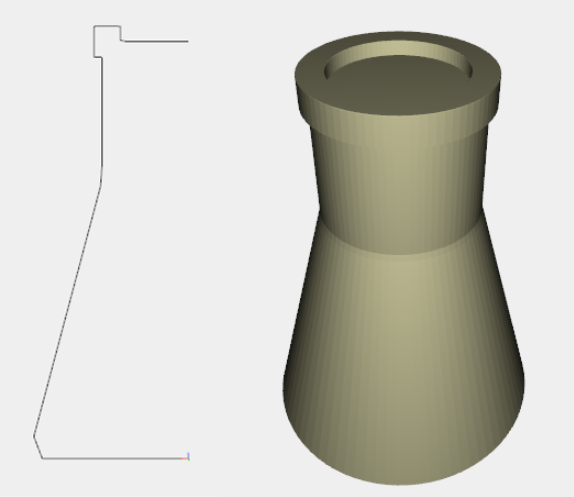
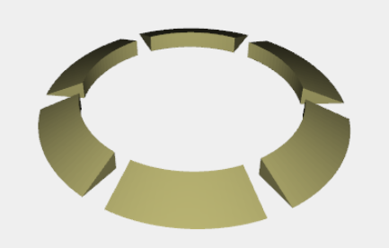
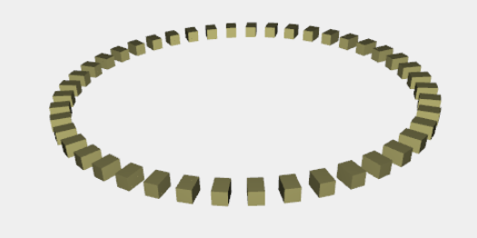
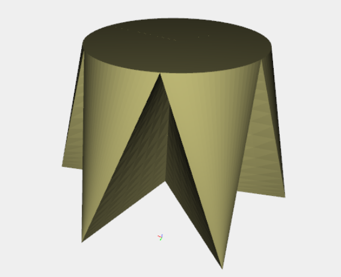
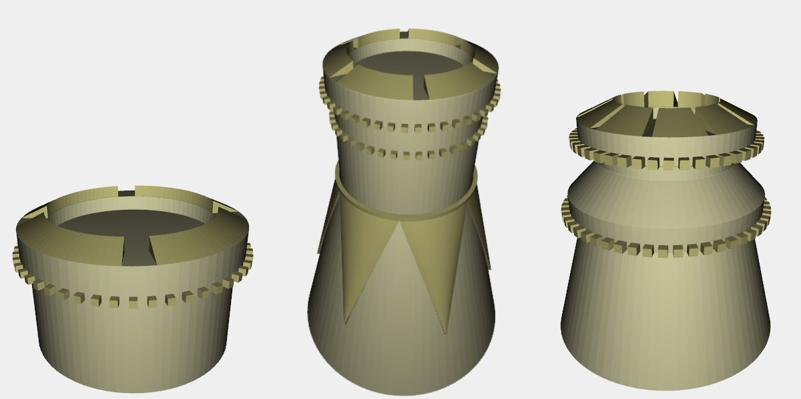
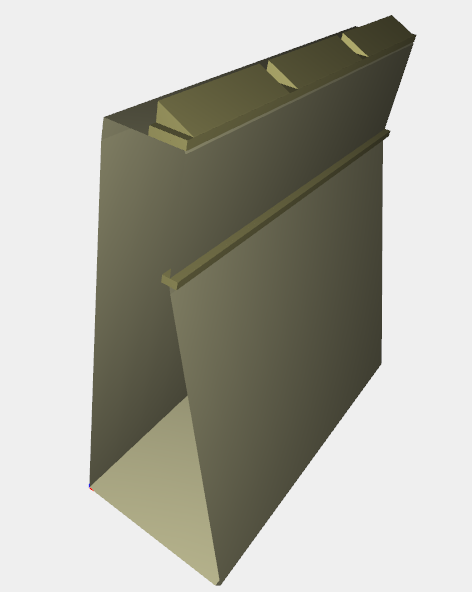
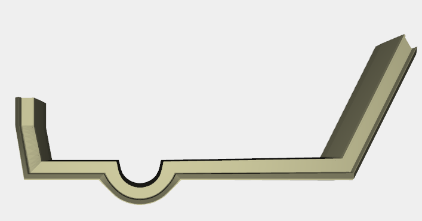
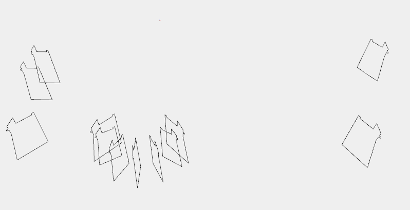
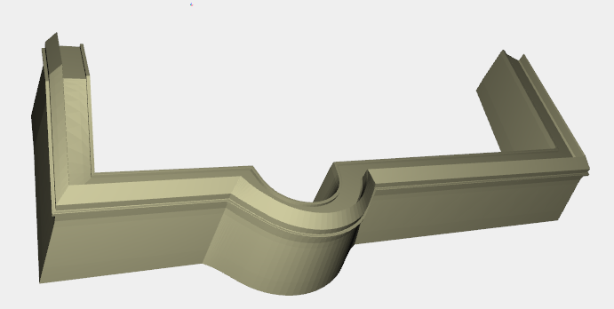
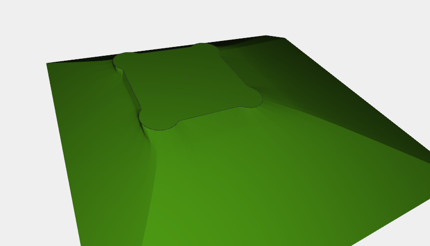

Development
The model was realized following a bottom-up approach.
In substance has been represented each basic element, and then compose the final model from them.
The most interesting elements are described below, accompanied by the design strategy, Javascript code and images.
Tower
- Basis
There are some kind of towers, but the approach followed to design the basis is the same for all type of them.
The approach consists of two steps: the first to generate the semi-profile of the tower through a NUBS (S0), the second is to create a ROTATIONAL_SURFACE from the NUBS (S0).

...
var profiloTorrePoints = [[0,0,0],[26,0,0],[26,0,0],[14,0,45],[14,0,45],[14,0,65],[14,0,65],
[15.3,0,65],[15.3,0,65],[15.3,0,70],[15.3,0,70],[14-3,0,70],[14-3,0,70],[14-3,0,67.5],
[14-3,0,67.5],[0,0,67.5]];
var profiloTorre = genNUBS(profiloTorrePoints);
var mappingTorre = ROTATIONAL_SURFACE(profiloTorre[1]);
var torre = COLOR(c1)(MAP(mappingTorre)(domainRotation1));
...- Battlements
Battlements are also generated with an approach similar to the that of the base of the tower, because is still generated a profile that is input data of the function ROTATIONAL_SURFACE.Through the function replicarotation is also possible to choose the section of the tower, the number of battlements and the dutycicle (ratio between surface covered by the battlements and the total area)

...
function replicaRotation (sezione,numRepliche,dutyCicle){
var domain = DOMAIN([[0,1],[0,2*PI*dutyCicle/numRepliche]])([20,20]);
var profile = genNUBS(sezione);
var mapping = ROTATIONAL_SURFACE(profile[1]);
var object = MAP(mapping)(domain)
var surface = genNUBS2d([profile[1],sezione[0]])
var top1 = surface
var top2 = R([0,1])([2*PI*dutyCicle/numRepliche])(surface)
var struc = COLOR(c2)(STRUCT([object,top1,top2]))
var rotation = R([0,1])([2*PI/numRepliche])
var result = STRUCT(REPLICA(numRepliche)([struc, rotation]))
return result
}
var merliPoints = translatePoints([[0,0,0],[1.3,0,0],[1.3,0,0],[-3,0,2],[-3,0,2],[-3,0,0],[-3,0,0],[0,0,0]],14,0,70)
var merli = replicaRotation(merliPoints,6,0.85)
...- Decorations
The friezes of the tower, continuous or discontinuous (as in the bottom), were generated through appropriate REPLICAS of CUBOID, to increase the computational efficiency. The number of cubes needed is functionally dependent by the radius of the tower at the point where they must be inserted. In the source code below is also present the necessary formula to calculate this number.

...
rm = 16
var k = ROUND(PI*rm)
var rot = R([0,1])([2*PI/k])
var fregi = STRUCT(REPLICA(k)([T([0,2])([rm+1.3-0.5,h])(cubetto), rot]))
...- "Tetrahedroidal" Decorations
This particular type of decoration is based on a surface generated from an arc of circumference and a point. To avoid generating, for each surface, an identical surface adherent to the tower, i preferred to join this surface with the one diametrically opposite. This will surely save resources.

...
function arcoxy (r,radianti,scostamento,tx,ty,tz) {
var fun = function (p) {
var u = scostamento + p[0] * radianti;
return [r * COS(u) + tx, r * SIN(u) + ty, tz];
};
return fun;
};
var arco1 = arcoxy(14.8,PI/3,0,0,0,45);
var arco2 = arcoxy(14.8,PI/3,PI,0,0,45);
var curveDec1 = [arco1,arco2]
var superficieDec1 = genNUBS2d(curveDec1)
var superficieDec2 = genNUBS2d([arco1, [22.5*COS(PI/6),22.5*SIN(PI/6), 16] ])
var superficieDec3 = genNUBS2d([arco2, [22.5*COS(PI+PI/6),22.5*SIN(PI+PI/6), 16] ])
var pointsTop11 = [[14.8*COS(0),14.8*SIN(0),45],[14.8*COS(0),14.8*SIN(0),45],[22.5*COS(PI/6),22.5*SIN(PI/6),16],[22.5*COS(PI/6),22.5*SIN(PI/6),16]]
var pointsTop12 = [[14.8*COS(PI),14.8*SIN(PI),45],[14.8*COS(PI),14.8*SIN(PI),45],[22.5*COS(PI+PI/6),22.5*SIN(PI+PI/6),16],[22.5*COS(PI+PI/6),22.5*SIN(PI+PI/6),16]]
var pointsTop21 = [[14.8*COS(PI/3),14.8*SIN(PI/3),45],[14.8*COS(PI/3),14.8*SIN(PI/3),45],[22.5*COS(PI/6),22.5*SIN(PI/6),16],[22.5*COS(PI/6),22.5*SIN(PI/6),16]]
var pointsTop22 = [[14.8*COS(PI+PI/3),14.8*SIN(PI+PI/3),45],[14.8*COS(PI+PI/3),14.8*SIN(PI+PI/3),45],[22.5*COS(PI+PI/6),22.5*SIN(PI+PI/6),16],[22.5*COS(PI+PI/6),22.5*SIN(PI+PI/6),16]]
var mapTop11 = genNUBS(pointsTop11)
var mapTop12= genNUBS(pointsTop12)
var mapTop21 = genNUBS(pointsTop21)
var mapTop22= genNUBS(pointsTop22)
var Top1 = genNUBS2d([mapTop11[1] ,mapTop12[1] ])
var Top2 = genNUBS2d([mapTop21[1] ,mapTop22[1] ])
var decTetraedroidal = COLOR(c2)(STRUCT([Top1,Top2,superficieDec1,superficieDec2,superficieDec3]))
var decTetraedroidal = STRUCT([R([0,1])([-PI/12]),decTetraedroidal,R([0,1])([PI/3])(decTetraedroidal),
R([0,1])([2*PI/3])(decTetraedroidal)])
...
Perimeter Wall
Once understood the mechanism of generation of the towers, the generation of the walls becomes merely an extension of the reasoning to the linear case.
The outer curtain wall is obtained by replicating 4 times the structure composed by two walls and a tower suitably translated and rotated.
The inner courtain wall is a suitable scaling of the outer.

...
var profiloMuroPoints1 = [[0,0,0],[25,0,0],[25,0,0],[10,0,45],[10,0,45],[10,0,60],[10,0,60],[0,0,60],[0,0,60],[0,0,0]]
var profiloMuroPoints2 = translatePoints(profiloMuroPoints1,0,60,0)
var profiloMuro1 = genNUBS(profiloMuroPoints1);
var profiloMuro2 = genNUBS(profiloMuroPoints2);
var muroRaw = COLOR(c1)(genNUBS2d([profiloMuro1[1],profiloMuro2[1]]))
var bordinoMuro = COLOR(c2)(T([0,2])([10-1,45])(CUBOID([2,60,1])))
var basamento = COLOR(c3)(T([0])([-60])(CUBOID([60,60,46])))
var parapetto = COLOR(c2)(T([0,2])([10-4.3,60])(CUBOID([4.3,60,1])))
var merliMuroPoints1 = translatePoints([[0,0,0],[1.3,0,0],[1.3,0,0],[-3,0,2],[-3,0,2],[-3,0,0],[-3,0,0],[0,0,0]],10-1.7,1,61)
var merliMuroPoints2 = translatePoints([[0,0,0],[1.3,0,0],[1.3,0,0],[-3,0,2],[-3,0,2],[-3,0,0],[-3,0,0],[0,0,0]],10-1.7,19,61)
var profiloMerloMuro1 = genNUBS(merliMuroPoints1);
var profiloMerloMuro2 = genNUBS(merliMuroPoints2);
var topMerloMuro1 = genNUBS2d([profiloMerloMuro1[1],merliMuroPoints1[0]])
var topMerloMuro2 = genNUBS2d([profiloMerloMuro2[1],merliMuroPoints2[0]])
var superficieMerloMuro = genNUBS2d([profiloMerloMuro1[1],profiloMerloMuro2[1]]);
var merloMuro = STRUCT([COLOR(c2),T([0])([0.4]),topMerloMuro1,topMerloMuro2,superficieMerloMuro])
var merliMuro = STRUCT(REPLICA(3)([merloMuro,T([1])([20])]))
var muro = STRUCT([muroRaw,bordinoMuro,basamento,parapetto,merliMuro])
Ravelin
To generate the ravelin was sufficient to calculate the points constituting the section of this object, and the proper replicas shifted, scaled and rotated in the same section. Once generated it is enough join these sections with a NUBS (S1).



...
qbr = -15 //quota base rivellino
hr = 25 //altezza rivellino
sr = 10 // spessore rivellino
sezRivellinoPoints = [[0,0,0],[sr,0,0],[sr,0,0],
[sr,0,hr+1],[sr,0,hr+1],[sr-1,0,hr+1],[sr-1,0,hr+1],[sr-1,0,hr],[sr-1,0,hr],
[sr-7,0,hr],[sr-7,0,hr],[sr-7,0,hr+4.5],[sr-7,0,hr+4.5],
[0,0,hr+1],[0,0,hr+1],[0,0,hr-1],[0,0,hr-1],
[-0.8,0,hr-1],[-0.8,0,hr-1],
[-0.8,0,hr-1.8],[-0.8,0,hr-1.8],
[0,0,hr-1.8],[0,0,hr-1.8],[0,0,hr-5],[0,0,hr-5],
[-3,0,0],[-3,0,0],[0,0,0]]
function TR (ArrayPoints,angolo,punto){
var result = translatePoints( rotZ (ArrayPoints,angolo),punto[0],punto[1],punto[2])
return result;
}
var sections = new Array()
sections.push(TR (sezRivellinoPoints,0,[-73+6,-92+15,0]))
...
for (var k = 1; k <= 5; k++) {
a=PI*k/6
sections.push(TR(sezRivellinoPoints,a,[23.5*COS(PI+a),(-92-22+23.5*SIN(PI+a)),qbr]))
};
...
sections.push(TR(scalePoints(sezRivellinoPoints,SIN(PI-PI/3)+ABS(COS(PI-PI/3))),PI-PI/3,[94+30+72*COS(PI/3),-50,qbr]))
var sectionsNubs = new Array()
for (var j = 0; j < sections.length; j++) {
sectionsNubs.push(genNUBS(sections[j])[1])
};
var rivellino = COLOR(c1)(genNUBS2ddomain (sectionsNubs, DOMAIN([[0,1],[0,1]])([30,100])) )
Mountain
They were designed three level curves:
1 - the base of the castle without ravelin at an altitude z = 0;
2 - a rectangular box generated from coordinates (x,y) minimum and maximum of the castle (with ravelin) at an altitude of z=-13;
3 - a replica of 2 with coordinates (x,y) scaled by a factor of 2 at a height z = -60.
From these contours, the mountain was generated simply by a NUBS (S1) that approximates these curves, and interpolates the first and last.
